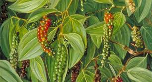

Piperaceae
The Piperaceae family, commonly known as the Pepper Family, is a large and economically important family of flowering plants belonging to the order Piperales, a basal lineage within the Magnoliids. The family includes herbs, vines, shrubs, and small trees, comprising about 5 genera and over 3600 species, dominated by the huge genera Piper and Peperomia. Piperaceae has a pantropical distribution and is renowned for species like Piper nigrum (source of black pepper) and the diverse ornamental houseplants in the genus Peperomia.
Overview
Piperaceae is one of the largest families among the basal angiosperms (Magnoliids), showcasing significant diversity in habit and ecology. Its members range from small, succulent epiphytes (Peperomia) to robust vines (Piper) and small trees. A key characteristic uniting the family is the inflorescence: typically a dense, fleshy spike (spadix-like) bearing numerous tiny, highly reduced flowers that lack a perianth (sepals and petals).
The family is pantropically distributed, thriving in moist, shaded forest environments. Economically, Piperaceae is highly significant. Piper nigrum provides black, white, and green peppercorns, one of the world's most traded spices. Other Piper species yield spices like cubeb and long pepper, or are used culturally, such as P. methysticum (Kava) for its psychoactive properties. The genus Peperomia is immensely popular in horticulture, with hundreds of species cultivated as houseplants for their diverse and often succulent foliage.
Phylogenetically, Piperaceae belongs to the Piperales order, representing an early diverging lineage of flowering plants distinct from both monocots and eudicots. Its closest relative is the Saururaceae (Lizard's Tail family).
Quick Facts
- Scientific Name: Piperaceae
- Common Name: Pepper Family
- Number of Genera: Approximately 5 (Piper, Peperomia, Zippelia, Manekia, Verhuellia)
- Number of Species: Over 3600
- Distribution: Pantropical
- Evolutionary Group: Magnoliids - Piperales
Key Characteristics
Growth Form and Habit
Plants are highly variable: herbs (terrestrial or often epiphytic), shrubs, vines (lianas climbing by roots), or small trees. Stems often have distinctly swollen nodes.
Leaves
Leaves are usually alternate (though often opposite or whorled in Peperomia), simple, with entire margins. Leaf shape is variable, often heart-shaped (cordate) in Piper or fleshy/succulent in Peperomia. Petioles are often sheathing at the base. Stipules are typically present (often fused to the petiole) or sometimes absent. Leaves and stems are often aromatic when crushed due to essential oils and alkaloids.
Inflorescence
The most characteristic feature is the inflorescence: flowers are minute and densely aggregated into thick, fleshy, often elongated spikes (sometimes described as spadix-like, but lacking a spathe). These spikes can be terminal, axillary, or leaf-opposed.
Flowers
Flowers are tiny, inconspicuous, actinomorphic (radially symmetrical), and usually bisexual (though sometimes unisexual). They are highly reduced: Key features include:
- Perianth: Sepals and petals are completely absent.
- Bracts: Each flower is typically subtended by a triangular or shield-shaped (peltate) bract on the spike axis.
- Androecium: Stamens number from (1-)2-6(-10), commonly 2, 3, or 6. Filaments are usually free.
- Gynoecium: Features a superior ovary composed of (1-)3-4(-5) fused carpels, but forming a single locule (chamber) containing a single basal ovule. There are 1-5 stigmas, which are often sessile (directly on the ovary) or borne on a very short style.
Fruits and Seeds
The fruit is typically a small, one-seeded drupe or nutlet, often partially embedded in the fleshy spike axis. The fruits remain densely packed on the spike at maturity. Seeds are small, with powdery or sparse endosperm and abundant starchy perisperm (nutritive tissue derived from the nucellus).
Chemical Characteristics
The family is rich in secondary metabolites, notably pungent alkaloids (like piperine in Piper nigrum), various amides, and essential oils, which contribute to the characteristic aromas and tastes used as spices and in traditional medicine. Saponins and lignans are also reported.
Field Identification
Identifying Piperaceae often relies on recognizing the unique inflorescence structure and vegetative features:
Primary Identification Features
- Habit: Herbs, shrubs, vines, or small trees (Pantropical).
- Leaves: Usually alternate (opposite/whorled in Peperomia), simple, entire.
- Stems: Often with swollen nodes.
- Aroma: Plants often aromatic when crushed.
- Inflorescence: Flowers minute, densely packed in fleshy spikes.
- Flowers: Tiny, lacking sepals and petals (no perianth), subtended by small bracts.
- Fruit: Small drupes or nutlets tightly packed on the spike.
Secondary Identification Features
- Stamens usually 2-6.
- Ovary superior, 1-locular, 1-ovuled.
- Peperomia often epiphytic or succulent.
- Piper often vines with cordate leaves.
Seasonal Identification Tips
- The characteristic flower or fruit spikes are the most definitive feature and can be present at various times depending on the species and climate.
- Vegetative features like swollen nodes, leaf arrangement (alternate in Piper, often opposite/whorled in Peperomia), leaf texture (fleshy in Peperomia), and aroma are useful year-round clues.
Common Confusion Points
Distinguishing Piperaceae from families with similar features:
- Araceae (Arum Family): Also often have fleshy spikes (spadix), but these are typically subtended by a large, often conspicuous bract (spathe), which is absent in Piperaceae. Araceae flower structure is also different.
- Saururaceae (Lizard's Tail Family): Also in Piperales and have spikes of small flowers, but flowers have distinct stamens and carpels (not as reduced as Piperaceae), and inflorescences are often subtended by showy white bracts (Houttuynia, Anemopsis).
- Other families with simple, alternate leaves: Check for the characteristic dense spike of tiny, perianth-less flowers. The combination is unique to Piperaceae.
Field Guide Quick Reference (Piperaceae)
Look For:
- Habit: Herb, shrub, vine, tree (Pantropical)
- Leaves: Simple, entire, usually alternate (Piper) or opp/whorled (Peperomia)
- Stems often with swollen nodes
- Often aromatic
- Inflorescence: Dense, fleshy spike
- Flowers: Tiny, NO sepals or petals
- Fruit: Small drupes/nutlets on spike
Key Distinctions:
- Dense spike of tiny, apetalous flowers
- No spathe (vs. Araceae)
- Flowers more reduced than Saururaceae
- Swollen nodes common
- Basal Angiosperm group (Magnoliid)
Notable Examples
Piperaceae is dominated by two enormous genera, plus a few smaller ones:

Piper nigrum
Black Pepper
A flowering vine native to South India, cultivated extensively for its fruit, which is dried and used as peppercorns (black, white, green pepper). One of the world's most important spices.

Piper methysticum
Kava
A shrub native to the western Pacific islands. Its roots are used to produce a traditional ceremonial beverage with sedative and anesthetic properties, important in Polynesian and Melanesian cultures.

Peperomia spp.
Radiator Plants
An extremely diverse genus (~1500 species) of mostly small, often succulent herbs and epiphytes found throughout the tropics. Widely popular as houseplants due to their varied and attractive foliage, compact size, and tolerance of indoor conditions.
Phylogeny and Classification
Piperaceae is a major family within the order Piperales. This order is part of the Magnoliid clade, one of the main groups of basal angiosperms that diverged before the split between monocots and eudicots. Magnoliids retain some features considered ancestral among flowering plants.
Within Piperales, Piperaceae forms a well-supported clade that is sister to the family Saururaceae (Lizard's Tail family). Together, Piperaceae and Saururaceae are sister to the Aristolochiaceae (Birthwort family, including Lactoridaceae and Hydnoraceae). The Piperales order represents a distinct lineage characterized by features like ethereal oils and often reduced floral structures.
The large size and diversity of Piper and Peperomia suggest significant evolutionary radiations within the family, adapting to various tropical niches, including epiphytism in Peperomia.
Position in Plant Phylogeny
- Kingdom: Plantae
- Clade: Angiosperms (Flowering plants)
- Clade: Magnoliids
- Order: Piperales
- Family: Piperaceae
Evolutionary Significance
Piperaceae holds significant evolutionary importance:
- It is a large, diverse family representing a major lineage within the basal angiosperm group (Magnoliids), providing insights into early flowering plant evolution.
- The extreme floral reduction (complete absence of perianth) is a notable evolutionary trend, likely linked to specialized pollination mechanisms.
- The dense spike inflorescence is a highly characteristic and successful reproductive structure within the family.
- The family showcases remarkable diversification in habit, including the evolution of epiphytism and succulence in Peperomia.
- Its economic importance (spices, medicinal plants, ornamentals) highlights the chemical and morphological diversity evolved within this lineage.